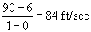
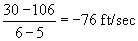
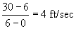
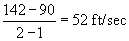

Let's take a look at average velocity. If you recall from earlier mathematics studies, average velocity is just net distance traveled divided by time. For example, if an object is tossed into the air we might find the following data for the height in feet, y, of the object as a function of the time in seconds, t, where t = 0 is when the object is released upward.
| t (sec) | 0 | 1 | 2 | 3 | 4 | 5 | 6 |
| y (feet) | 6 | 90 | 142 | 162 | 150 | 106 | 30 |
This table says that the object was 6 feet above the ground when released, 90 feet after 1 second, etc. How fast was it traveling? We can divide the net distanced traveled by the time to compute the velocity. For example, over the first second the average velocity is

Over the last second, the average velocity is
Note that velocity can be negative to indicate downward motion (positive velocity is upward motion in this problem). Speed is just the magnitude of the velocity (i.e., the absolute value, in our one-dimensional example). We can also compute the average velocity over the entire interval as
Now, what if we wanted to know the velocity at a specific time, say at t = 1? Clearly there is some velocity, as the object is moving, but to compute velocity we need a ratio of distance traveled to time spent traveling. We could find the average velocity over the interval from 1 to 2 seconds, which is just
But this isn't quite right, as the object does seem to be speeding up. If we had another measurement of height at a time closer to 1 than 2 seconds, we could get a better estimate of the instantaneous velocity at t = 1. The following applet illustrates this.